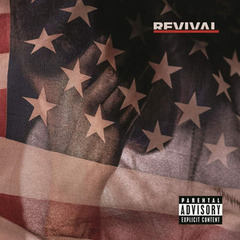
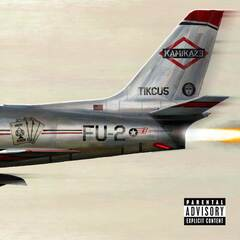
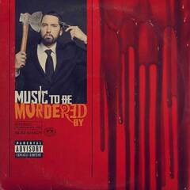
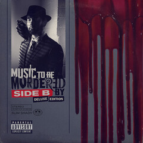

TRACKLIST

- Walk on Water (ft. Beyonce)
- Believe
- Chloraseptic (ft. PHRESHER)
- Untoucheable
- River (ft. Ed Sheeran)
- Remind Me (Intro)
- Remind Me
- Revival (Interlude)
- Like Home (ft. Alicia Keys)
- Bad Husband (ft. X Ambassadors)
- Tragic Endings (ft. Skylar Grey)
- Framed
- Nowhere Fast (ft. Kehlani)
- Heat
- Offended
- Need Me (ft. Pink)
- In Your Head
- Castle
- Arose

- The Ringer
- Greatest
- Lucky You (ft. Lucas Joyner)
- Paul (Skit)
- Normal
- Em Calls Paul (Skit)
- Stepping Stone
- Not Alike (ft. Royce da' 59)
- Kamikaze
- Fall
- Nice Guy (ft. Jessie Reyez)
- Good Guy (ft. Jessie Reyez)
- Venom
- Killshot
- No Favors (ft. Big Sean)
- Vegas
- Fine Line
- Outro

- Premonition (Intro)
- Unnaccommodating (feat. Young M.A)
- You Gon' Learn (feat. Royce Da 5'9'' & White Gold)
- Alfred (Interlude)
- Those Kinda Nights (feat. Ed Sheeran)
- In Too Deep
- Godzilla (feat. Juice WRLD)
- Darkness
- Leaving Heaven (feat. Skylar Grey)
- Yah Yah (feat. Royce Da 5'9'', Q-Tip & Denaun)
- Stepdad (Intro)
- Stepdad
- Marsh
- Never Love Again
- Little Engine
- Lock It Up (feat. Anderson .Paak)
- Farewell
- No Regrets (feat. Don Toliver)
- I Will (feat. KXNG Crooked, & Joell Ortiz)
- Alfred (Outro)

- Alfred (Intro)
- Black Magic (with Skylar Grey)
- Alfred’s Theme
- Tone Deaf
- Book of Rhymes (featuring DJ Premier)
- Favorite Bitch (featuring Ty Dolla Sign)
- Guns Blazing (featuring Dr. Dre and Sly Pyper)
- Gnat
- Higher
- These Demons (featuring MAJ)
- Key (Skit)
- She Loves Me
- Killer
- Zeus (featuring White Gold)
- Thus Far (Interlude)
- Discombobulated
- Ken Kaniff (Skit)